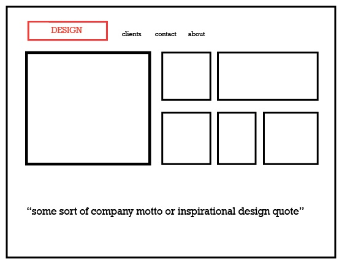
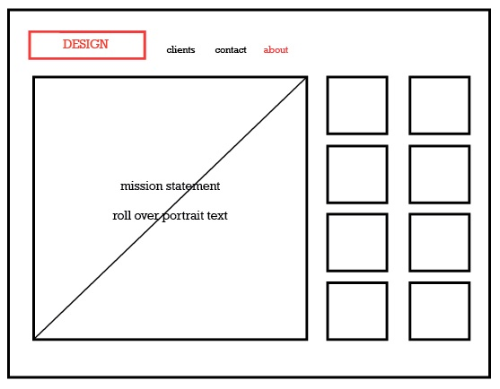
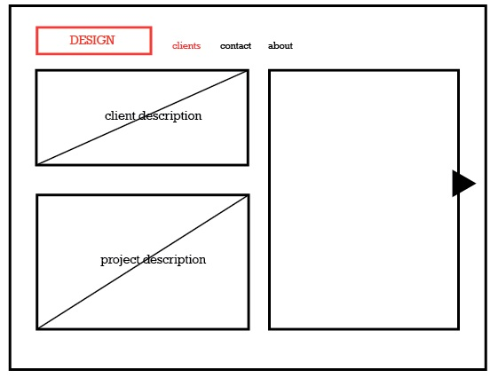
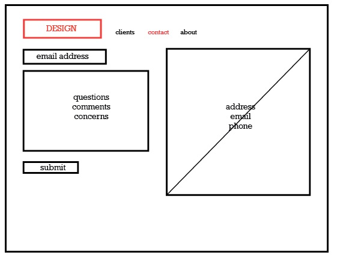

Wireframes for Design Studio
-

-

-

-

Hanna
A Young Designer Fresh out of College in search of a job
- Stumbles upon the studio through a design site
- She wants to know more about them so she goes to their personal site
- Stumbles upon the studio through a design site
- She wants to know more about them so she goes to their personal site
- On their site the first thing she wants to see is the portfolio of work they do
- She clicks on “clients” where she can flip through the work and decide if the clients they work for are of interest.
- Some projects seem more exciting than others but maybe the employees seem like a good fit to work with.
- To get a feel for the work environment she looks in “about” where she sees everyone who works in the department.
- She clicks on some portraits and reads a bit about their position.
- She clicks on some portraits and reads a bit about their position.
- She decides it could be a nice stepping stone so she clicks “contact” and sends them a message inquiring about job opportunities.